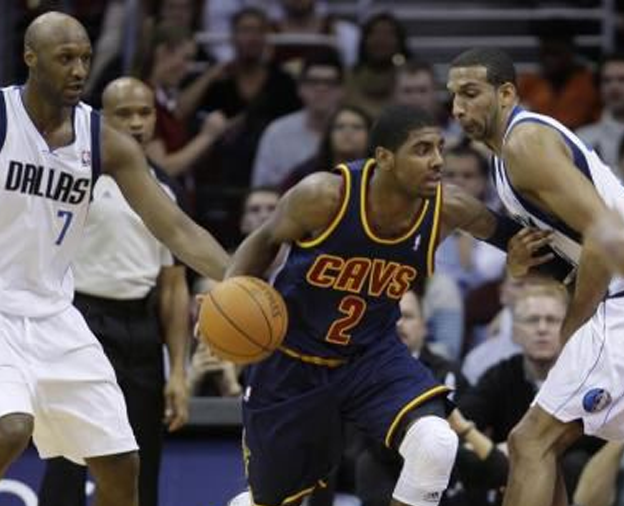
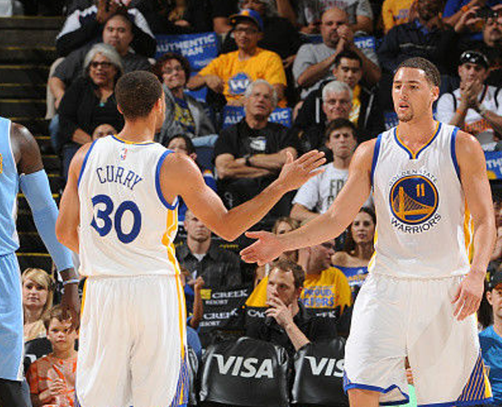
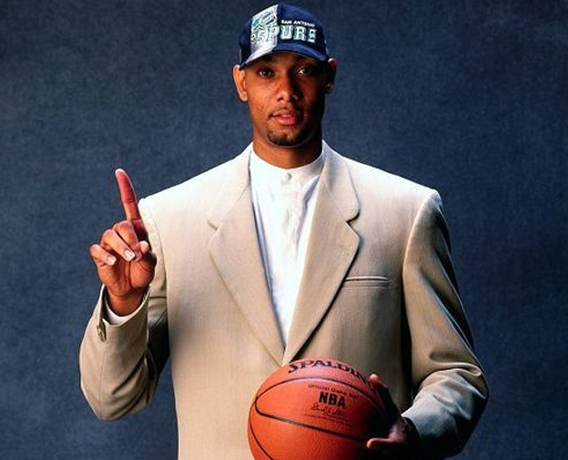

历届总冠军

克利夫兰骑士队
克利夫兰骑士队（Cleveland Cavaliers），是一支属于美国的俄亥俄州克利夫兰（Ohio,Cleveland）的职业篮球队，是美国男篮职业联赛（NBA）东部联盟中部赛区的一部分。 1970年，克利夫兰骑士队正式成立并加入NBA联盟。 2003年，骑士队选中状元秀勒布朗·詹姆斯，在詹姆斯的带领下，骑士队于2007年首次进入NBA总决赛，但以0-4负于马刺队。2011年选秀大会上，骑士队用状元签选中凯里·欧文，同时队伍进入重建。 2014年7月12日，詹姆斯宣布回归骑士队。同年夏天，骑士队通过签约与交易，组建了勒布朗·詹姆斯、凯里·欧文与凯文·乐福的骑士队三巨头。[1] 2016年6月20日，骑士战胜勇士夺得2015-16赛季总冠军。[2]
金州勇士队
金州勇士队（Golden State Warriors）[1] ，于1946年成立并加盟NBA，是一支属于美国的加利福尼亚州奥克兰市（Oakland, California）的职业篮球队，是美国男篮职业联赛（NBA）西部联盟太平洋赛区的一部分。 勇士队主场原来在费城，1962年才搬到加州；由于加州的昵称是“金州”[2] ，故取名“金州勇士”[1] 。它是最早加盟NBA的11支球队之一；在NBA历史上，曾四次夺过总冠军，NBA的第一次总冠军得主就是勇士队；NBA单场最高分纪录保持者威尔特·张伯伦就是在勇士队拿下100分的。 在唐·尼尔森成为球队教练后，勇士队成为了一支可以为季后赛席位展开争夺的劲旅，2006-07赛季季后赛第一轮更是淘汰常规赛冠军小牛队创造NBA史上第3个“黑八奇迹”[3] 。 2015年6月17日，NBA总决赛第六场，勇士客场以105-97再胜骑士，总比分4-2夺取总冠军。这是勇士队在1974-75赛季以来的第一个冠军，也是勇士所有球员个人职业生涯的第一个总冠军。安德烈·伊戈达拉获得总决赛MVP[4] 。 2015-16赛季，勇士在常规赛中取得73胜9负的成绩，打破了公牛在1995-96赛季创下的纪录，成为NBA历史单赛季常规赛战绩最好的球队[5] 。
圣安东尼奥马刺队
圣安东尼奥马刺队是一支位于美国德克萨斯州圣安东尼奥的职业篮球队。其前身达拉斯灌木丛队于1967年成立并加入美国篮球协会（ABA），1973年搬至圣安东尼奥并改名马刺队，1976年加入美国男篮职业联赛（NBA）。现从属于NBA西部联盟的西南赛区。 马刺队是在1976年ABA与NBA合并后保持完整的原ABA联赛的四支球队之一，也是原ABA联赛中唯一一支夺得NBA总冠军的球队。1976年以来，马刺队共计获得5次NBA总冠军，6次西部冠军，以及21次赛区冠军。只有四次未能进入季后赛，马刺队利用四支乐透签相继选中了埃尔文·罗伯特森（1984年第7顺位）、大卫·罗宾逊（1987年状元）、肖恩·埃利奥特（1989年第3顺位）和蒂姆·邓肯（1997年状元）。 80年代，在“冰人”乔治·格文的率领下，马刺于1982、1983年连续闯入西部决赛。90年代，两位状元秀“海军上将”大卫·罗宾逊和“大基本功”蒂姆·邓肯的“双塔战术”在1999年为球队带来了首个NBA总冠军。进入21世纪，随着托尼·帕克和马努·吉诺比利等人相继加入，马刺成为联盟中最具统治力的球队之一。2003年，马刺4比2战胜总决赛对手网队夺冠。2005年，马刺在总决赛中与同样以防守团队体系著称的活塞队鏖战七场夺冠。2007年，马刺在总决赛横扫骑士队，夺取了九年中第四座总冠军奖杯，正式标志“马刺王朝”的诞生。2014年，马刺在总决赛中以4比1轻取热火队，第五次夺得NBA总冠军，成为除波士顿凯尔特人、洛杉矶湖人、芝加哥公牛外夺冠次数最多的NBA球队。